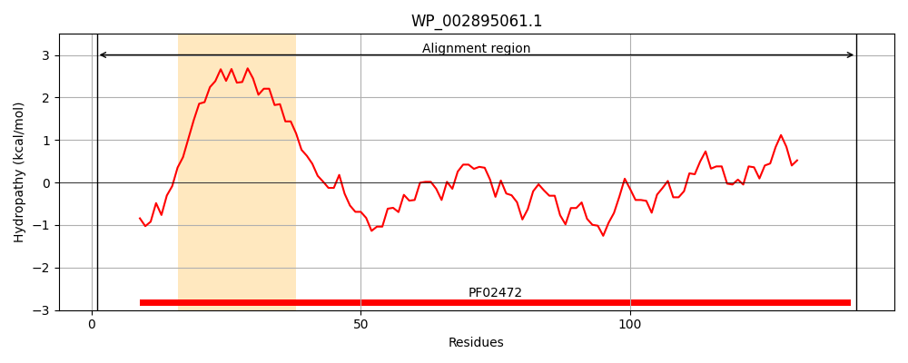
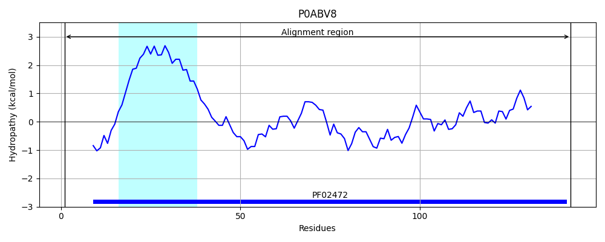
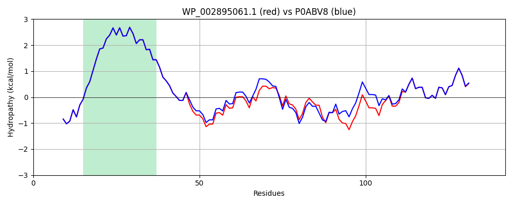

Hit Accession: P0ABV8
Hit TCID: 1.A.30.2.2
Hit Description: gnl|BL_ORD_ID|8727 gnl|TC-DB|P0ABV8|1.A.30.2.2 Protein tolR OS=Escherichia coli O157:H7 GN=tolR PE=3 SV=1
Mach Len: 142
e:0.000000
Query TMS Count : 1
Hit TMS Count: 1
TMS-Overlap Score: 1.150000
Predicted Substrates:CHEBI:9175;sodium(1+), CHEBI:5584;hydron
BLAST Alignment:
Score: 604 , Bit scores: 237 bits, E-value: 4.7e-82, Alignment length: 142, Percentage identity: 86
Query: 1 MARARGRGRRELKSEINIVPLLDVLLVLLLIFMATAPIITQSVEVDLPDATESQAVKSNDDPPVIVEVSGVGQYSVKVGQETLSQLPPEQVIAEAKRRLEANEKTVFLIGGAKDVPYDEIIKALNLLHSAGVKSVGLMTKPI 142
MARARGRGRR+LKSEINIVPLLDVLLVLLLIFMATAPIITQSVEVDLPDATESQAV SND+PPVIVEVSG+GQY+V V ++ L +LPPEQV+AE R +AN KTVFLIGGAKDVPYDEIIKALNLLHSAGVKSVGLMT+PI
Sbjct: 1 MARARGRGRRDLKSEINIVPLLDVLLVLLLIFMATAPIITQSVEVDLPDATESQAVSSNDNPPVIVEVSGIGQYTVVVEKDRLERLPPEQVVAEVSSRFKANPKTVFLIGGAKDVPYDEIIKALNLLHSAGVKSVGLMTQPI 142 | Protein Hydropathy Plots: |
|---|
|  |  |
Pairwise Alignment-Hydropathy Plot:
|
|---|
|  |